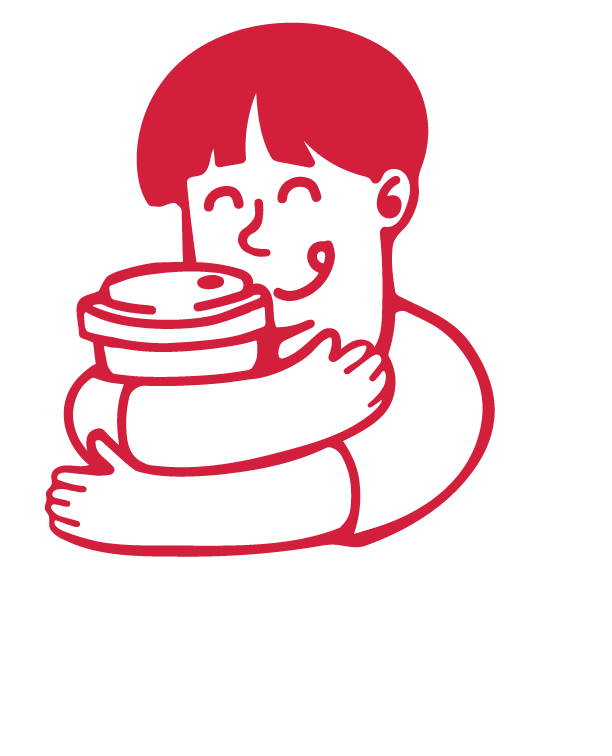

Absensi Kopi Feeling
Awali harimu dengan senyuman dan kopi
📍 Lokasi: Mencari titik GPS...
⏰ Waktu: -
Bukti Kehadiran Anda:
Foto di atas sudah diberi watermark logo, waktu, dan lokasi.

Awali harimu dengan senyuman dan kopi
Foto di atas sudah diberi watermark logo, waktu, dan lokasi.